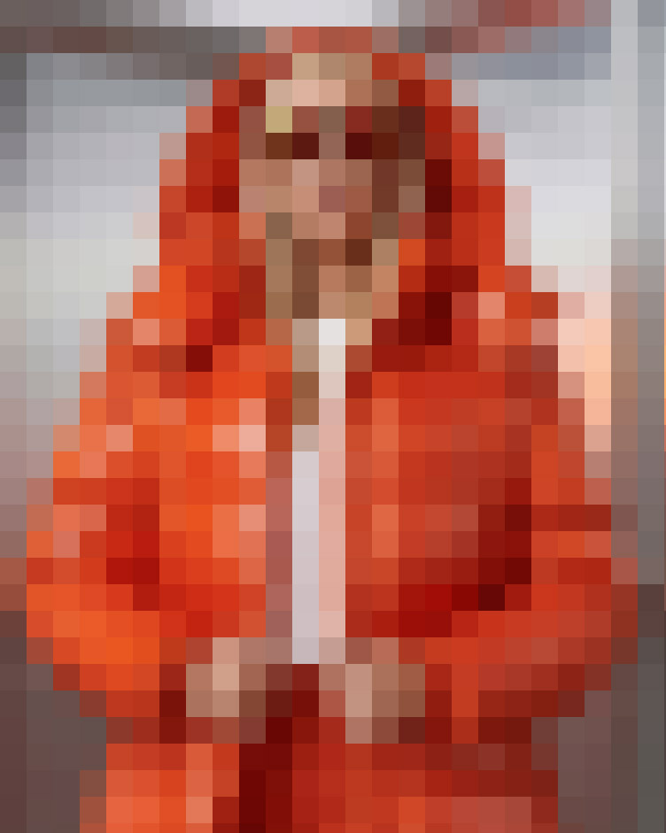
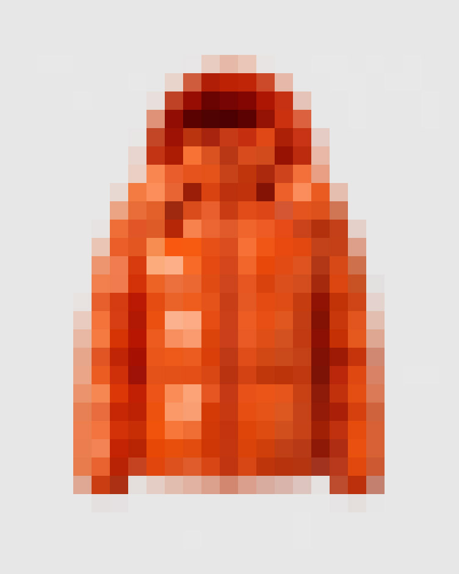
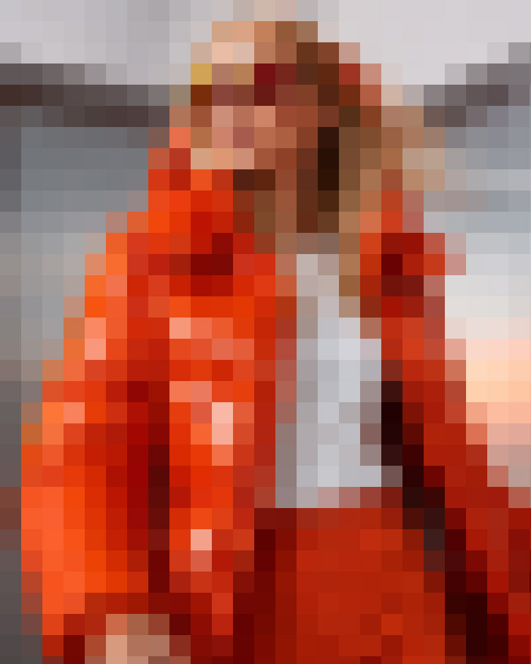
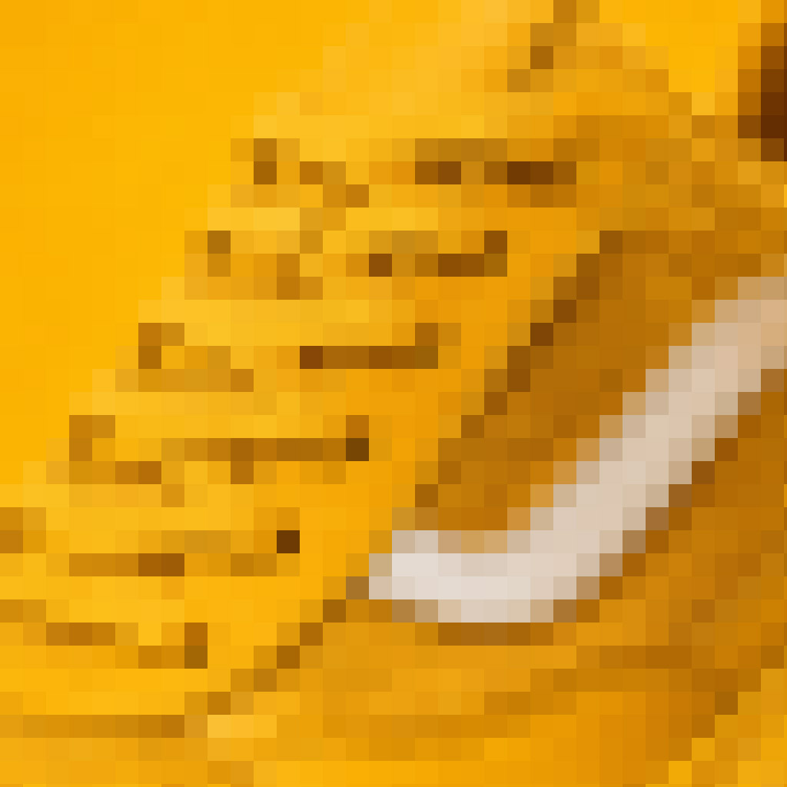
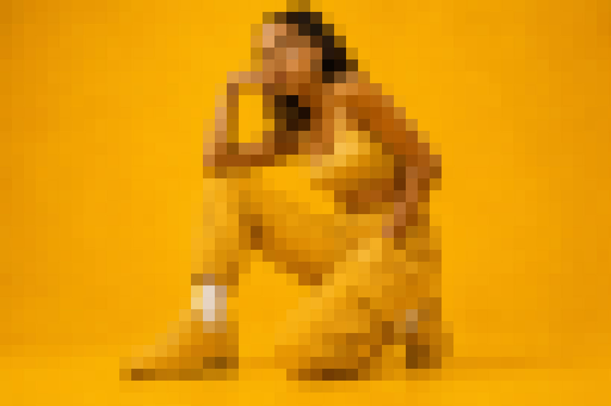
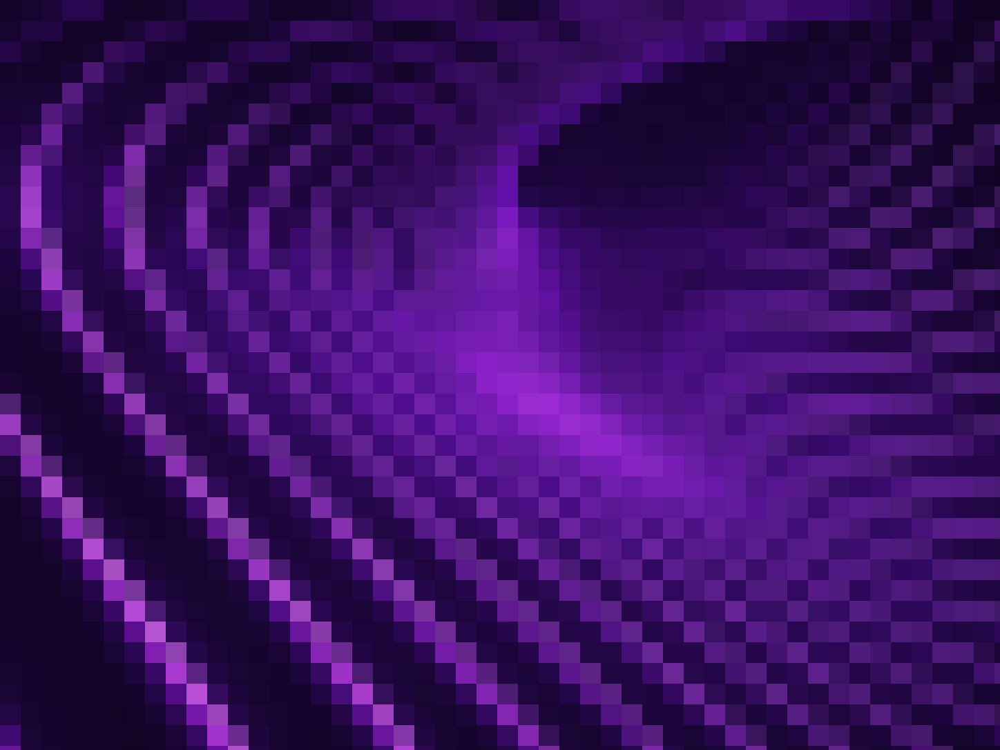
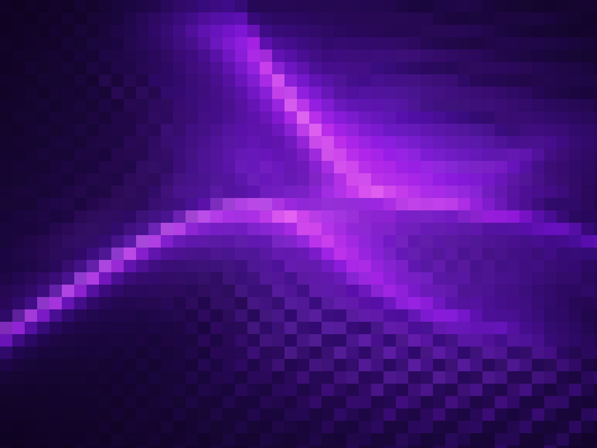

Client
Synthesis Studio
Sector
Branding, Art Direction, Motion
Industry
Design & Technology
What does it mean to hold every possibility at once? For Synthesis it meant pulling every layout, every section type and every visual decision from across eight projects into a single coherent page — a map of the full system, nothing left out.


Every layout, every section type and every visual possibility — assembled in a single place.


The first column sits flush to the right half of the grid, offset from the left by two quarters. This creates breathing room on the left and keeps the eye moving through the copy without effort.
The second column runs parallel, matching the rhythm of the first. Both sit within the right-hand half of the layout, creating a clean typographic register that echoes the visual weight of the images above.
{kind=link}
{kind=link}
{kind=link}
{kind=link}
Built from every decision made.
The left column anchors the typographic baseline on the left edge of the grid. Two columns sit side by side before a two-quarter spacer opens up on the right — inverting the offset of earlier rows.
This reversal gives the layout visual contrast across the full page. The eye moves left to find the text, then right to find the space, tracing the rhythm the designer intended from the start.
{kind=link}

{kind=link}

The pinned text column holds its position while the adjacent image scrolls past it — creating a locked editorial relationship between word and image.
{kind=link}

The image carries the weight
of the idea
{kind=link}
{kind=link}

{kind=link}



This final text pair closes the content sequence. The right-offset two-column layout brings the page back to the register established at the top — a visual callback that gives the full scroll a sense of resolution.
Every section type from across all eight projects is now represented in a single page. Client info, image grids, sliders, videos, parallax, offset layouts, pinned columns — the complete toolkit, in order, ready to adapt.